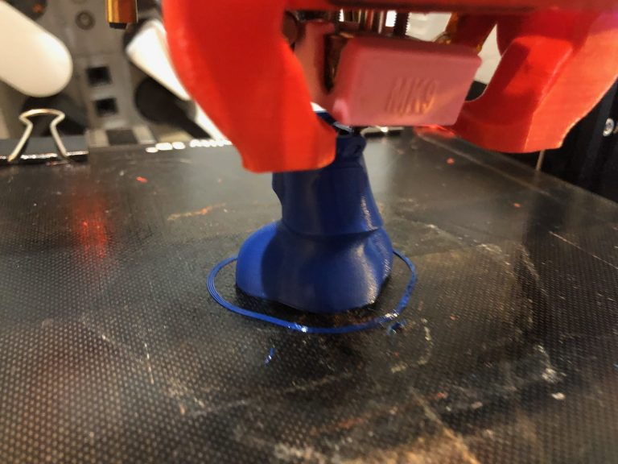

Vida de una Ender 3
Os voy a relatar las modificaciones realizadas en mi Ender 3 modificada comprada a finales del 2018.
Durante los primeros meses empec√© a imprimir todos los mods que la gente recomendaba, tensores, protector ventilador, difusor del ventilador de capa y reconozco que la impresora de serie funcionaba muy bien, el problema era el usuario que no sabia manejar el software üòí, tambien le puse un cristal templado y cambie el ventilador de capa por un 5015

En su momento me animé a cambiarle el extrusor por un BMG clon y el Hotend por un V6 clon aprovechando para ya ponerle Marlin 2.x ya que tenia la placa original 1.2 así mejorar la impresión, previo desbloqueo del boot.
Cuando ya tenia el nuevo V6 y mi BMG preparados, con el montaje dañé el Mosfet del hotend , por lo que cuando encendía la impresora, se ponía a calentar sin control , cuando lo detecté teniendo marlin en la placa, intercambié el Mosfet de la cama por el del Hotend , de esta manera pude seguir imprimiendo una temporada sin cama caliente.
Mientras estaba de esta manera, ped√≠ una MKS Gen L en china y una pantalla TFT de 3.5″ con unos TMC 2208 , ya cuando llegaron aprovech√© para imprimir una caja inferior y un soporte de pantalla, tambi√©n le puse unos leds de colores RGB alrededor del marco (mala idea por que al final acabaron haciendo cortocircuito).
También me animé a montarle un armario con unas mesas de IKEA, pero no acabo muy bonito.
Con el uso, me he dado cuenta que seguía sin imprimir correctamente, tenia muchos problemas en Z y en X, por lo que cambie el motor del Extrusor por uno mas pequeño.
Pero la cosa no acababa de funcionar, tenia problemas con la temperatura y filamento flexible, por lo que decidí cambiar el Hotend por algo muy nuevo, el cual me ha sorprendido mucho su buen funcionamiento, el hotend de maxiwatt , el cual es cilíndrico y distribuye muy bien el calor.
Finalmente cambie el eje Y por un carril lineal, el cual mejora mucho el comportamiento y ruido de las ruedas, sobretodo cuando llevan mucho tiempo, y también busqué otra caja para la electrónica y volví a la vieja pantalla original + una RPI B+ integrada en ella, con Octoprint.
A principios del 2021 , gracias a un canal de youtube bastante famoso, Control 3D Me animé a volver a imprimir otra caja para la electronica y para RPI, aprovechando estos cambios, añadí un KIT BVL de Guias Lineales en X y en Z, así como cambiar la electronica por una MKS S_GENL con TMC2209 sin sensores de final de carrera, y una pantalla tactil directa a la RPI.
Como Hotend, despues de ser betatester de E3D , he puesto un Biqu H2 que esta a fecha de Julio 2021: